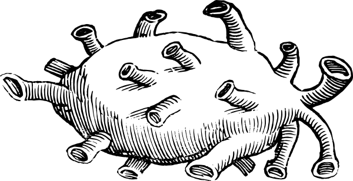

(More info about this snippet beneath the Plantin-Moretus heart woodcut. For now, enjoy…)
She unbuttoned his shirt, slid her hands into his chest and tugged. She eased her hands around to get a better grip, and tugged a little harder. He winced, but the extraction of his heart was surprisingly painless. And so far as his senses could tell, he hadn’t died, which was something of a relief although he had tried to prepare himself for that possibility. His chest felt normal when he rubbed his hand over it, thumping a short drum beat over the inexplicably vacant area in his chest. It was, one way or the other, undeniable that she was now holding what could be nothing else than a human heart, his heart, beating normally. His heart… but his heart no longer, because it was now hers. That was the deal.
He told himself it was not emptiness he felt, but openness. Love could no longer touch him, weigh him down. A kind of careless freedom. The kind of freedom where he could do what he wanted, where it wouldn’t matter what he wanted, where he longer cared what he wanted, where he was no longer sure that he wanted, or needed, anything at all.
She smiled, a hint of childish glee or devilish avarice tweaking her lovely face, which she made no pains to hide. Detached as he now was, he could see with an uncanny clarity of knowing that she had always coveted his heart, but he couldn’t begin to think why. It made little difference.
Heartless, he buttoned-up his shirt, slid his coat on and left her there, his pulsing heart in her hand. He whistled tunelessly as he skipped down the steps into the fresh air. It would be dawn soon.
The mountains ranged like a castle wall in the distance. The mountains. Peace and solitude. With the sun at his back, he followed his ever-shrinking shadow.
Within the week he had found himself a pretty peak, set some miles deep into the range; not the highest peak, nor the lowest, but well-forested and remote. The earth, rocky though it was, he contrived to excavate, to dig and hollow out like a mole. Thus he lived.
From the passing rain clouds he drank, never minding the thunder and lightning, and from the roots and the berries of the forests he ate. In his seclusion he spoke not at all, and he moved soundlessly. The wild goats of the mountains, and the birds and deer, foxes and wolves, paid him no especial attention. And as he lived longer and longer in the wilds, his thoughts too became quiet and even. He thought very little of the woman who had refused his heart and less and less of the woman with whom he had disposed his broken heart. One year followed the next, just as one day did, and there was no change in the world that ventured so far as to disturb him.
She watched him leave. The man’s heart was warm in her hands, slick and pulsing. She could feel the weight of it, full of remorse and regret, of loves lost and loves refused, but also more than this of which she could not be certain… It was enough, in any case, to weigh any man down.
For the moment, she found a large, clear imperfectly blown glass jar and slid the unhappy man’s heart inside. She rummaged around in a various assortment of jars, cans, bottles, and unnameable herbs tied up freely in twine or wrapped up in brown paper. Shoving these aside, she extricated what appeared to be an enormous cider jug full of some colorless viscous fluid. Hefting it onto her thin shoulders, she brought it over to the jar with the heart, uncorked the jug and poured the fluid in until the heart was fully immersed, and then some. It smelled sweetly of chemicals. The lid was screwed on as tight as her still damp hands could manage. It would keep until she was ready to make use of it. A man’s heart, even a broken one, could be surprisingly useful and this one contained such ingredients as to make it especially potent for her purposes.
Her own heart beat quickly, and instinctively she placed her hand protectively on her chest. Calming herself, she looked around and took stock. She would need to gather ingredients and make preparations.

Author's Notes: Yeah I'm one of those people who want to write a book some day and then don't (I try not to talk about it though, because that would certainly spell doom for any future aspirations, right? D-O-O-M; there. I've spelled it for all of us now). I'd be happy to be able to squeeze out some short stories. At 728 words, this is pretty firmly in the flash fiction category, but it would still be flash fiction if it was twice as long (according to a quick g—— search).
I wrote this bit years and years ago. Roiling in the back of my head was a vague story (theoretically at least enough for a Tor-length novella), based on the fairy tale of The Troll With No Heart In His Body. There's lots of variations on it. Trolls, in the Nordic imagination, are very appealing to me. John Bauer illustrated them perfectly. And the idea of the villain—usually a troll and/or giant—that keeps his life, his heart, somewhere super safe and secret outside of his body is just glorious. I love it.
There are some actual sketches I did for this story, and a few more written snippets. None, however, are nearly so good as the snippet above. I think it kinda works nicely on its own, even. Does it? Shit, maybe I'll submit it some publication or other. That would be terrifying but it also might be galvanizing. To actually get a REJECTION LETTER! WOW! That would mean I'd SUBMITTED something. How cool would that be? I must be rejected afresh! Which means I must write more! more! more! Tell me it's great but you can't fit it in right now! Tell me to submit again in the future! Tell me my writing needs work! Tell me! Kick me swiftly into that fiction-writing seat!
I highly appreciate anyone at any ability who can finish short stories, novels, whole goddam series of books. How. It's astounding and super cool.
Lastly! Like so many aspiring creatives, I am a sucker for trying out new tools, new programs, when in my heart of innermost hearts (the one that can never be plucked) I know that it's not the tool that makes the art: it's YOU; learn how to use the tools available to you even if it's "just" pen and paper, identify the limitations of those tools to your specific needs, and then seek out the new tools that address those needs << note very much to self.
MANUSKRIPT is the tool I started playing around with for this story. It's free, open-source, and relatively straightforward compared against Scrivener or most other similar programs I'm vaguely familiar with. The main benefits for me include: easy navigation to your scenes and chapters; a (non-restrictive!) word count goal for scenes, chapters, entire book; and lastly, you can highlight the paragraph (or sentence) that you're composing, defocusing the paragraphs or sentences surrounding it. These three things make it super appealing to me. There are lots more features to the program, such as ways of following your plot threads, character development, world building shit, all that; I'm not looking to write the next Game of Thrones, or Stormlight Archives, so.